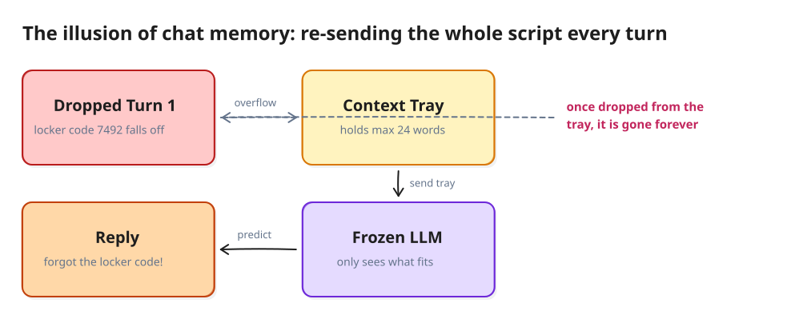
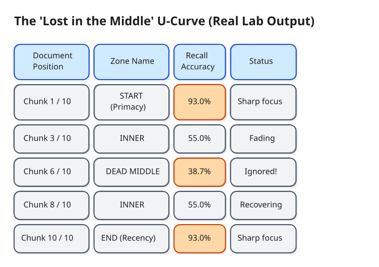

The context window is your whole memory
Explain it like I'm 12: The Amnesia Chef and the Fixed-Size Lunch Tray
Remember from Checkpoint 1 that the AI's brain is a frozen file on a hard drive? Every time it finishes answering you, it gets 100% total amnesia. It does not store a file on its server called 'Ashwin's Chat' inside its neural weights.
Wait — then how does ChatGPT or Claude know what you said two messages ago when you ask a follow-up question?
Because your chat app plays a sleight-of-hand trick! Every time you hit Send, the app takes your entire chat history from the very first message, glues your new line onto the bottom, and places the whole stack onto a fixed-size tray called the context window in plain words: the maximum number of tokens (input prompt + generated reply combined) the model can hold and look at in a single pass.
Look at Figure 1 from our lab. Our toy tray holds at most 24 words. In Turn 1, you tell the AI: 'My secret locker code is 7492.' By Turn 5, after chatting about the cafeteria menu and robotics club, the conversation is 43 words long. To fit the new question onto the 24-word tray, the app silently shoves Turns 1, 2, and 3 off the back of the tray (truncation). When Turn 5 asks 'What was my secret locker code?', the AI has no idea — because Turn 1 literally isn't on the tray anymore!

Why you pay for Message 1 ten times in a 10-turn chat
Once you see the lunch tray trick, a big billing mystery makes instant sense.
When you have a 10-message conversation with an AI API: - On Turn 1, you send 100 tokens. - On Turn 2, you re-send Turn 1 (100 tokens) + Turn 1's answer (200 tokens) + your new question (100 tokens) = 400 tokens. - By Turn 10, you are re-sending and paying for Message 1 for the tenth time in a row!
Every token on the tray — both the prompt (everything you send in) and the completion (every new token the model generates back) — shares the same context window budget.
Lost in the Middle: Why a giant tray still misses the middle sandwich
Modern models brag about giant trays: 128,000 tokens (a whole 300-page book) or even 1,000,000 tokens. So developers thought: 'Awesome! I'll just paste 50 documents into the prompt and the AI will find the needle in the haystack.'
Then researchers at Stanford (Liu et al., Lost in the Middle) tested where the needle actually sat inside the stack of documents. Look at Figure 2 from our Python lab: - When the key fact sat in Chunk 1/10 (the very beginning), recall accuracy was 93.0%. - When the exact same fact was moved to Chunk 6/10 (the dead middle), recall crashed to 38.7%! - When the fact was moved to Chunk 10/10 (right at the bottom next to the question), recall jumped right back up to 93.0%.
Just like a human cramming a textbook five minutes before class, the model remembers the first page (primacy) and the last page it just read (recency), while the middle pages blur together.

How to pack your prompt tray so the AI never misses
Look at Figure 3. Knowing the U-curve gives you a concrete layout rule for every production prompt you ever write:
- Top of the tray (Chunk 1 — 93% recall): Put your non-negotiable system role and rules here.
- Middle of the tray (Chunks 3–7 — lower recall): Put lower-ranked background history or older conversation turns here.
- Bottom of the tray (Chunk 10 — 93% recall): Put your #1 highest-ranked retrieved document and the exact user question / output format instruction at the very bottom of the prompt, right before the model starts generating tokens.

Plain-English Jargon Decoder
Hands-On Python Lab: Simulate Sliding Context Truncation & the 'Lost in the Middle' U-Curve
Run a 24-word sliding context window over a 5-turn chat to watch Turn 1's secret locker code ('7492') fall off the tray, then measure the U-shaped recall curve across 10 document positions (93.0% at start/end vs 38.7% in the middle).
=== STEP 1: Sliding Context Window Budget (Max 24 words) ===
Dropped at the door (3 turns): ['Turn 1: My secret locker code is 7492.', 'Turn 2: Let us discuss the cafeteria menu for Monday.', 'Turn 3: The cafeteria serves masala dosa and filter coffee.']
Inside context window (2 turns): ['Turn 4: On Tuesday the library hosts a robotics club demo.', 'Turn 5: What was my secret locker code from Turn 1?']
Can the model see '7492'? -> False (Turn 1 fell off the tray!)
=== STEP 2: 'Lost in the Middle' Recall Across a 10-Chunk Document ===
Chunk 1/10 [START (Primacy)] -> Recall accuracy: 93.0%
Chunk 3/10 [INNER ] -> Recall accuracy: 55.0%
Chunk 6/10 [DEAD MIDDLE ] -> Recall accuracy: 38.7%
Chunk 8/10 [INNER ] -> Recall accuracy: 55.0%
Chunk 10/10 [END (Recency) ] -> Recall accuracy: 93.0%"""Pure-Python Context Window & 'Lost in the Middle' Lab for Module l0-context-window.
Shows:
1. Why an LLM has zero memory between API calls unless you re-send the whole chat history.
2. What happens when your conversation exceeds the context window budget (FIFO truncation).
3. The 'Lost in the Middle' U-shaped attention curve discovered by Liu et al. (2023).
"""
from __future__ import annotations
def build_chat_payload(history: list[str], max_tokens: int) -> tuple[list[str], list[str]]:
"""Simulate a sliding context window that drops oldest tokens when full."""
kept: list[str] = []
dropped: list[str] = []
used = 0
# Keep newest messages from the end backward until budget is full
for msg in reversed(history):
cost = len(msg.split())
if used + cost <= max_tokens:
kept.append(msg)
used += cost
else:
dropped.append(msg)
kept.reverse()
dropped.reverse()
return kept, dropped
def attention_recall_probability(position_index: int, total_chunks: int) -> float:
"""U-shaped recall curve (primacy + recency bias in long context windows)."""
# Normalized position from 0.0 (very start) to 1.0 (very end)
x = position_index / max(total_chunks - 1, 1)
# Parabola centered at 0.5 (the middle trough)
recall = 0.38 + 2.2 * ((x - 0.5) ** 2)
return min(0.96, round(recall, 3))
def main() -> None:
conversation = [
"Turn 1: My secret locker code is 7492.",
"Turn 2: Let us discuss the cafeteria menu for Monday.",
"Turn 3: The cafeteria serves masala dosa and filter coffee.",
"Turn 4: On Tuesday the library hosts a robotics club demo.",
"Turn 5: What was my secret locker code from Turn 1?",
]
print("=== STEP 1: Sliding Context Window Budget (Max 24 words) ===")
kept, dropped = build_chat_payload(conversation, max_tokens=24)
print(f"Dropped at the door ({len(dropped)} turns): {dropped}")
print(f"Inside context window ({len(kept)} turns): {kept}")
has_secret = any("7492" in m for m in kept)
print(f"Can the model see '7492'? -> {has_secret} (Turn 1 fell off the tray!)")
print("\n=== STEP 2: 'Lost in the Middle' Recall Across a 10-Chunk Document ===")
for idx in (0, 2, 5, 7, 9):
prob = attention_recall_probability(idx, total_chunks=10)
zone = "START (Primacy)" if idx == 0 else ("END (Recency)" if idx == 9 else ("DEAD MIDDLE" if idx == 5 else "INNER"))
print(f" Chunk {idx+1:2d}/10 [{zone:15}] -> Recall accuracy: {prob*100:5.1f}%")
if __name__ == "__main__":
main()